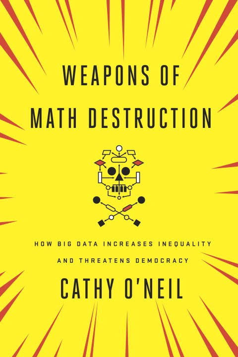

Data Ethics
But what could go wrong?
Diana Pfeil, @dianam

Let's not be ignorant

Failure modes for Northpointe recidivism model
|
white |
african-america |
| Labeled high risk, did not re-offend |
23% |
45% |
| Labeled low risk, did re-offend |
48% |
28% |
Source: https://www.propublica.org/article/machine-bias-risk-assessments-in-criminal-sentencing
Dangerous Model Territory
scale: significant impact on everyone's lives

unfair: illegal or unjust factors used in decision-making
opaque: model is not open or reviewable by those affected
no feedback loop: model does not course-correct